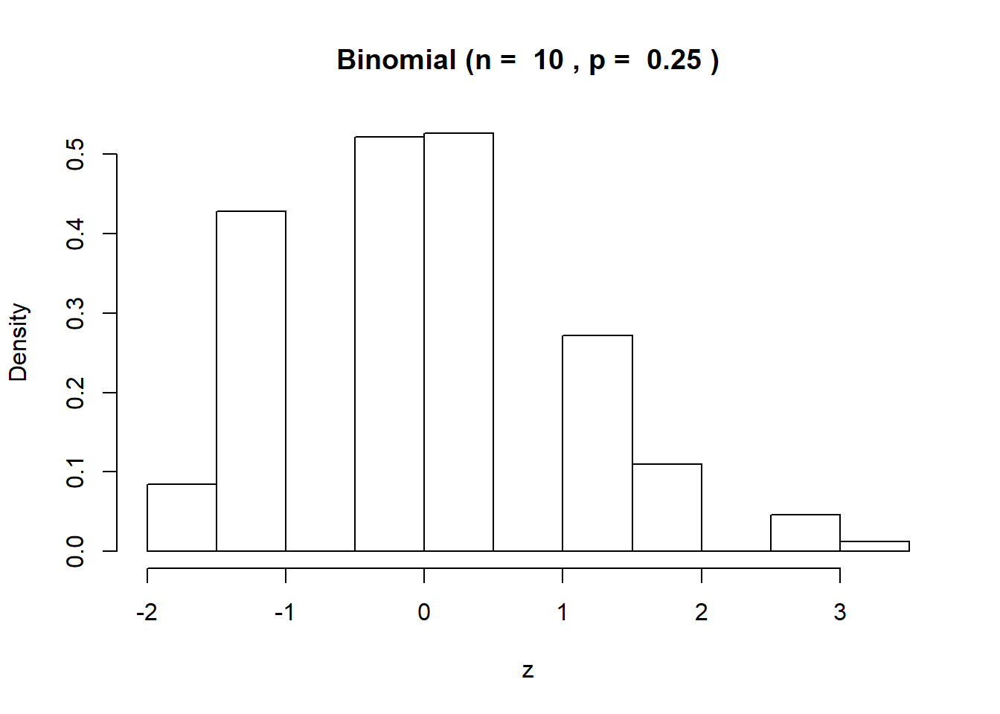
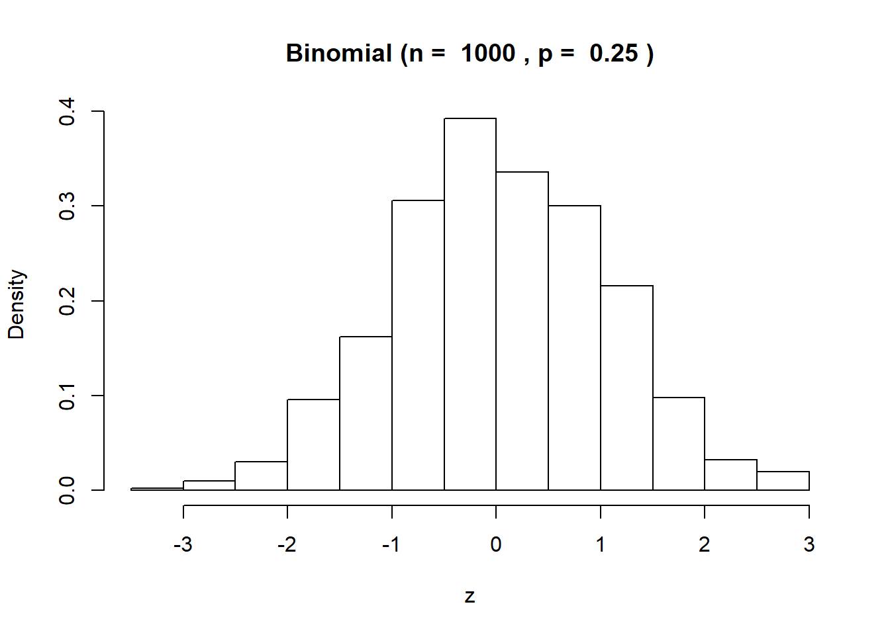
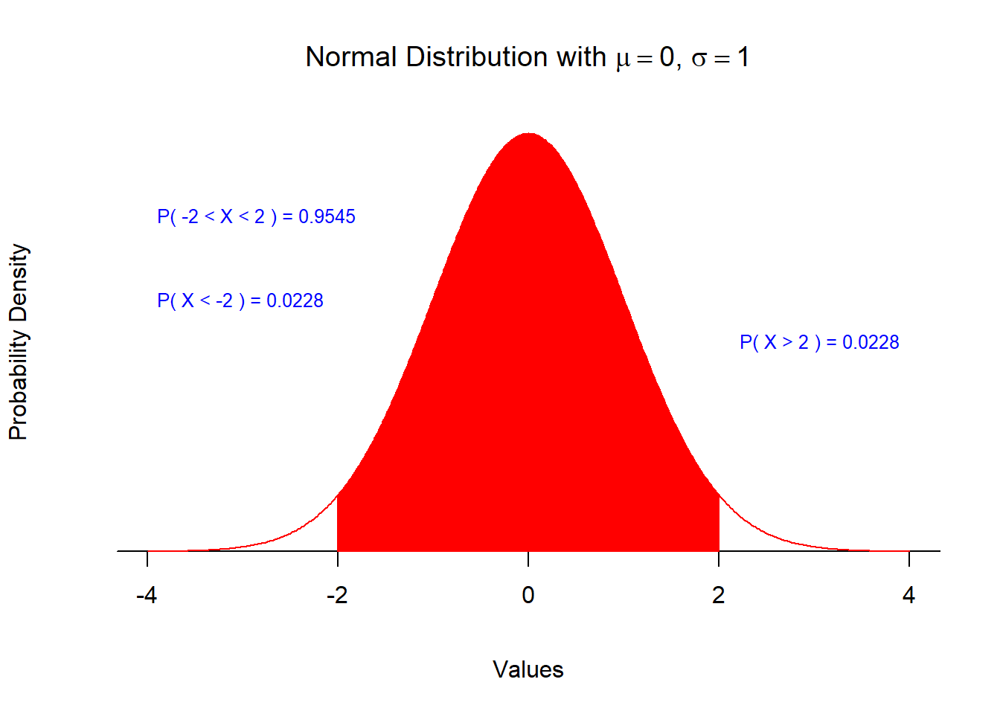
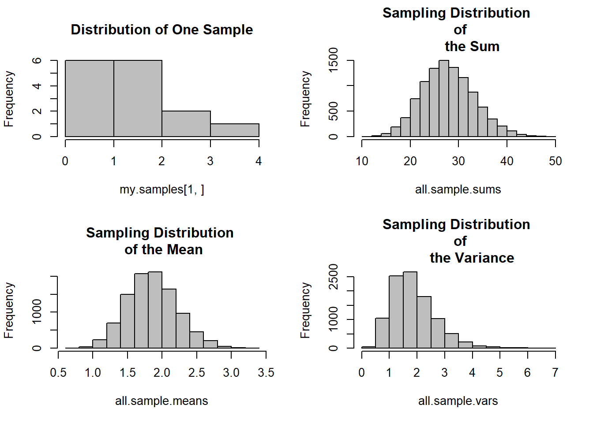

Chapter 16 Normal Distribution and More
16.1 The most uninformative distribution
Suppose we have no idea about the shape of the distribution of our stock portfolio. We do know that the value of the portfolio can range from $10,000 to $15,000 in a 52 week period. What is mean and standard deviation you can expect in this situation?
We use the uniform distribution to model our diffuse beliefs. For this problem \(a = 10^{4}\), \(b = 1.5\times 10^{4}\). The population mean of the uniform distribution is
\[ \mu = \frac{(a+b)}{2} = \frac{10^{4} + 1.5\times 10^{4}}{2} = 1.25\times 10^{4} \]
The population standard deviation is
\[ \sigma = \frac{(b-a)}{\sqrt{12}} = \frac{(1.5\times 10^{4} - 10^{4})}{3.4641016} = 1443.375673 \]
Why?
16.1.1 How informative?
16.2 What is normal?
Let’s draw \(X_i\) from \(1\) to \(n\) successes independently from a population where \(\mu\) and \(\sigma\) are known, then we would discover that the standardized average
\[ \frac{\bar{x} - \mu}{\sigma / \sqrt{n}} \]
is asymptotically normal with mean 0 and variance 1 (often called normal(0,1)).
This can be interpreted as the idea that we sample enough \(X_i\) and \(n\) is large enough the average is approximately normal with mean \(\mu\) and standard deviation \(\sigma / \sqrt{n}\).
This result is also known as the Central Limit Theorem (CLT), a cornerstone of classical statistics.
What we will call normal is often also called Gaussian.1 We will mean a symmetric distribution with mesokurtic “tailedness”, or kurtosis of 3. This implies there are not too many rare outcomes in the tails of the distribution. Using the measure of kurtosis will also mean that there is a defineable (finite) variance. Symmetry means that skewness equals to zero.
16.2.1 How can we check this?
Simulation is an excellent way. Now we get our feet good and wet and our hands dirty (always remembering to wash them frequently for 20 seconds or more with soap and water).
Let’s take the most uninformative distributiom we know, the uniform distribution. Using the example we started this journey with, let’s now call 5 stock brokers for their views on the value of our stock portfolio. We recall that the minimum value is \(a=\) $10^{4} and the maximum value is \(b=\) $1.510^{4}. Also let’s call them all 1000 times. Of course they might get annoyed with us, but let’s just charge ahead.
If your are working in Microsoft Excel you can made good use of the =RANDBETWEEN() function.2
Let’s first do this for the binomial distribution, the CLT translates into saying that if \(x_n\) are binomial distribution outcomes with parameters \(n\) and \(p\) then
\[ z = \frac{x_n - np}{\sqrt{np(1-p)}} \]
then the standardized \(x\), called \(z\), is approximately Normal(0,1).
16.2.2 Let’s investigate
Create binomial random numbers in Excel using
BINOM.INV(n, p, RAND()).RAND()is the randomly generated cumulative probability of a successful binomial outcome.Start with just a few trials: \(n = 10\) and \(p = 0.20\).
Then generate in 1000 separate cells

Almost bell-shaped. A little lop-sided too… Here are some statistics on our experimental runs.
## Loading required package: moments## Loading required package: knitr## Warning: package 'knitr' was built under R version 3.6.3| mean | std_dev | median | skewness | kurtosis |
|---|---|---|---|---|
| 0.0467 | 1.0255 | -0.3651 | 0.3073 | 2.8085 |
Almost a “normal” mesokurtotic result of 3.0. A small skewness indicating a little asymmetry.
16.2.3 Now try this
Use a lot more than a few trials: \(n = 1000\) and \(p = 0.20\).
Then generate in 1000 separate cells

Much more symmetric. Here are some summary statistics.
| mean | std_dev | median | skewness | kurtosis |
|---|---|---|---|---|
| 0.049 | 1.0152 | 0.073 | 0.0108 | 2.9315 |
Slightly negatively skewed tail we can eyeball, but very small.
Mean is near zero, and median not far from zero too.
Standard deviation is nearly 1.
Kurtosis is almost on that magic normal mesokurtic number of 3.0.
16.3 Standard normal too
Here is a standard normal distribution, \(\mu = 0\), and \(\sigma = 1\). This is a distribution centered on 0. How is this like the calculated \(z\)-score?
Here is a graph of the z-score you generated above.

What is the interpretation of the \(-2\) and \(+2\)
What is probability that an outcome is not 2 standard deviations from the mean?
16.4 Where do normal outcomes come from?
Is anything normal? Normal distributions very naturally come from a very interesting source: sums and averages of random samples of any set of outcomes.
Suppose we think that the number of students out of a random sample of 15 students from course sections (classes) that voted in last year’s election is 1.2 students/year-class. Lets sample this intensity using the Poisson distribution with \(\lambda = 1.2\) 10,000 times. When we do this, we calculate the sums, averages, and variances of each and every of the 10,000 samples. Then we plot. Here’s the result.

What do we notice?
Carl Friedrich Gauss.↩
We can look this up (here)[https://support.microsoft.com/en-us/office/randbetween-function-4cc7f0d1-87dc-4eb7-987f-a469ab381685] and, with more examples, (here)[https://www.educba.com/randbetween-in-excel/].↩